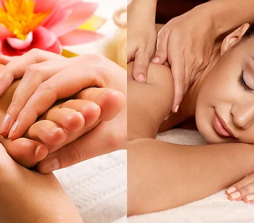

WELCOME TO
THE HE FAMILY FOOT SMILE SPA
OPEN
MON-SAT 10:00-21:00
SUN 10:30-20:00
+1 (847) 583-1616
9235 Waukegan Rd, Morton Grove, IL 60053

Relax from head to toe with our foot reflexology & body massage. Soothe your aching feet in a relaxing foot soak while your head, shoulders, back, hands, and feet are massaged to make you feel years younger and relieve tension and stress This massage is designed to pamper and purify with special focus on the body areas that receive the hardest stress in daily life. It's done partially clothed Asian style in a community room.

Deep tissue is a great massage for someone looking to get rid of those nasty muscle spasms also known as knots, alleviate spasms, and get rid of back and neck pain. Deep tissue massage is definitely more intense than some of the other massages, but also offers some the greatest benefits.
Combo massage is 30 mins deep tissue and 30 mins reflexology It's focus on your back and great for eliminating pain for your shoulders and back. Deep Tissue, and Asian Style reflexology into a massage session that is sure to please even the most exper massage enthusiast. VERY POPULAR.
Are you extra stressed? The Asian style body and foot massage session by 4 hands provides the perfect escape from a stressful day. Get double the pleasure by having 2 massage therapists work your entire body during this one hour session. This is our most popular massage.